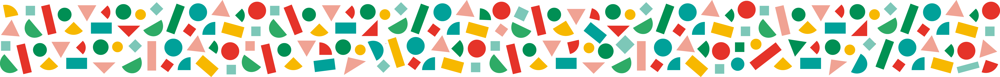

Pide algo y mejora la respuesta
Compara una petición vaga con otra que explique objetivo, contexto, público y formato. Mejora conversando.
Abrir prácticaTeoría relacionada →
Explora cómo usar la inteligencia artificial en un negocio, una actividad cultural o un proyecto personal. Empieza por la explicación o por una práctica y avanza a tu ritmo.
Lee ideas breves sobre instrucciones, información propia, creación de contenidos y revisión humana. Vuelve a ellas cuando las necesites.
Ir a la teoría →Elige una experiencia, copia los prompts, compara resultados y guarda tus versiones. Puedes empezar por cualquiera de las disponibles.
Ver las experiencias →Ocho experiencias · orden sugerido, acceso libre
Las experiencias 1, 2, 3, 4, 5, 6 y 8 están listas para probar. La campaña (07) se incorporará después. Puedes entrar por cualquiera de las disponibles.
Compara una petición vaga con otra que explique objetivo, contexto, público y formato. Mejora conversando.
Abrir prácticaTeoría relacionada →Define el uso, crea una ilustración, cambia un detalle y revisa defectos y posibles confusiones.
Abrir prácticaTeoría relacionada →Parte de una imagen autorizada, describe el movimiento y comprueba qué cambia. Incluye alternativa con demostración.
Abrir prácticaTeoría relacionada →Construye un personaje, contrasta la leyenda con el texto aportado y mejora sus instrucciones.
Abrir prácticaTeoría relacionada →Prepara portada, secciones y artículos de ejemplo mediante conversación, vista previa o un archivo HTML.
Abrir prácticaTeoría relacionada →Reúne tres documentos de ejemplo, contrasta sus citas y crea una ficha revisada antes de pedir un resultado a la IA.
Abrir prácticaTeoría relacionada →Combina texto e imagen y revisa coherencia, datos, legibilidad y público.
Teoría: revisión →Decide qué comprobar ante una cita dudosa, una imagen engañosa y datos que sobran en un documento. Tres casos ficticios, sin puntuación.
Abrir experienciaAntes de compartir →